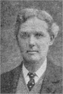
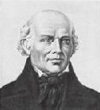
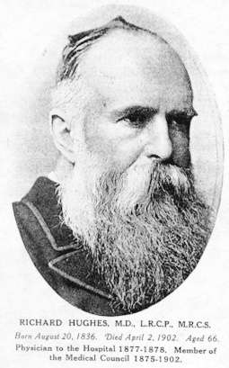
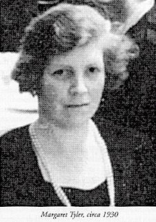
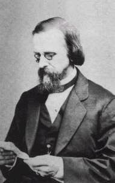
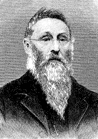
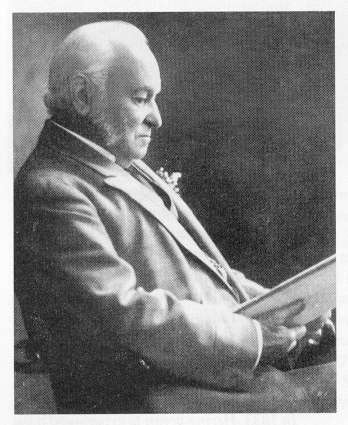
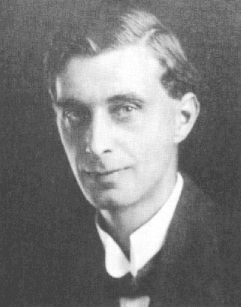

THE PRESCRIBER
by John Henry Clarke
Presented by Médi-T.Main * A * B * C * D * E * F * G * H * I * J * K * L * M * N * O * P * Q * R * S * T * U * V * W * Y * Z
Preface. * Introduction : How to practise homeopathy - Case-taking - The plan of the Prescriber and how to use it - List of remedies, abbreviations and signs * Toothache : Repertory and Reversed Repertory.
PART II. - CASE-TAKING.*
[* The greater portion of this section originally formed part of an Introductory Address delivered to students at the London Homœopathic Hospital. This explains the direct personal note in it which I have not thought necessary to alter here.-J. H. C.]
1. A Suggested Form.
2. "Totality of the Symptoms" and the Invisible Nature of Disease.
3. "Treating Symptoms." Hahnemann's Case.
4. Indications from Heredity and History.
5. The Value of the Names of Diseases.1. A SUGGESTED FORM.
 The first step towards making a good prescription is a well-taken case. The homœopathist takes his cases with much more care than do others ; for he has a double diagnosis to make-the diagnosis of the disease and the diagnosis of the remedy. The directions given by Hahnemann himself in the Organon should be carefully studied, and the spirit of them followed. The patient should be allowed to tell his own story, stating just what he feels, and the particular symptoms he is most anxious to be rid of.
I once had a compliment paid to me by a patient in Hahnemann ward when I was a resident physician in the hospital. It was paid indirectly and was all the more valuable for that. It was contained in a remark made to another patient and over-heard by one of the nurses. The speaker was telling his neighbour why he approved of my methods. It was not because I had cured him, for he had not been in hospital long enough for that ; it was because, as he put it, "He lets you have your say."
This, I take it, is the foundation on which a true picture of a case has to be constructed in the doctor's mind -the patient's own uninterrupted story of that which he experiences. It is very far from being the whole of the picture, for if the doctor cannot see much more than the patient can tell him, he is not much of a doctor. But the patient's story provides not only the foundation, but also the outline which the imagination of the physician must fill in. It is on this power of correctly filling in the lines and the colours of a case that success in the art of the physician largely depends. When the patient has finished his story then comes the physician's turn. By his questions he elicits the particulars of the patient's past history, his family history, and the cause of his trouble if ascertainable, and he completes the picture by such items as he is able to obtain by physical examination.
Having elicited the evidence, subjective, objective and inferential, the next question is-how is he to preserve the record ? In this matter, every practitioner is a law to himself. Some have copious and accurate memories and are able to hold the picture complete in all its details in their own minds. I am not one of these. For me it is a necessity to get all the chief points on written record, so that, without burdening my memory, I can quickly restore the mental picture at any future time, by a reference to my notes.
 In my own practice I have found of great service in taking cases detached printed forms such as I here append. The headings of the Hahnemannian Schema are spaced out, and under each I put the symptoms as told me by the patient, or as ascertained in examination. As the Schema form is the only form in which a comprehensive knowledge of a remedy can be retained in the memory, so it is most useful to get the facts and symptoms of a patient's case likewise into Schema form for purposes of comparison. The points of resemblance at once occur to the practitioner who has his knowledge in orderly shape. For it is of vital importance to have our knowledge in proper form ; otherwise the unorganised part of it only hampers us in the use of the little we have made our own. And we cannot rightly claim to possess any knowledge that we have not incorporated with our mental organism.
For recording the subsequent progress of a case I have blank papers of the same size as the printed forms. I have them made of the thinnest notepaper, so that they occupy very little space in my pocket book. Any stationer will supply both the printed forms and the blank papers.
It is simply for convenience of reference that I use this form to enter the symptoms in. I do not elicit them in that shape-I take them in their natural order as they come. The schema is the index of the case, but the body of the case is the picture in your own imagination. For the continuation of the case blank slips are used into which the initial slip fits, and these can be added to indefinitely. In my desk are drawers which hold these slips, and these are arranged in alphabetical order. The four following pages indicate the form I mean.
For cases taken at the bedside I adopt the same plan. At first I used to memorise and write the cases up later at home.
- Complaint and History.
- Generalities.
- Mind.
- Head.
- Eyes.
- Ears.
- Nose.
- Face.
- Mouth.
- Throat.
- Appetite, Eating.
- Stomach.
- Abdomen.
- Bowels.
- Kidneys, Urine.
- Generative.
- Respiratory.
- Chest.
- Heart.
- Neck, Back.
- Extremities.
- Skin.
- Fever.
- Sleep.
- Temperature.
- Time.
- Motion, Touch, etc.But I found that too troublesome and too great a strain on my memory. I always like to save myself trouble, as most of my friends know, and by dotting down the items at the bedside in the records which I carry in my pocket case I save both trouble and time. Thus far the mechanical part of the process.
Having got your case taken and entered, what are you going to do with it ? "Cure it," you say. Certainly ; but there is something more to be done before you can get to work on that. The case must be digested in your own mind. If you can put a satisfactory label on it, by all means do so. But that is not sufficient in itself.
Every new case we take on is a new world we enter ; and for the time being we must identify ourselves with it, if we are to alter it for the better.
2. "TOTALITY OF THE SYMPTOMS" AND THE INVISIBLE NATURE OF DISEASE.
Among the technicalities of Homœopathy is the phrase "Totality of the symptoms." There is nothing mysterious or sacred about the phrase, but Hahnemann rightly said that this "totality," -that is, the sum total of the sensations and observable changes in the organism- constitutes the concrete problem in every case with which we have to deal, no matter what name the academicals may give to it.
Disease, we must never forget, is, in Hahnemann's conception, an INVISIBLE thing. It is a derangement of the INVISIBLE VITAL FORCE. To use a modern simile, the symptoms constitute a moving picture like the figures on the screen of a cinema. The visible and tangible part of the human body is the screen ; the appearances and sensations of the diseased vital force are the "symptoms" and are analogous to the moving figures ; but the operators producing the appearances are hidden from the audience. All the same, it is by looking on the screen that you can read the story of the changes in the invisible life-force in a way you could not do by going behind the screen. "Hence the totality of the symptoms" constitutes the disease as our senses apprehend it. The academic name we give to it is a secondary matter. As Hahnemann once said to a patient who asked him what his disease was, and what he was going to give him, -"The name of your disease is no concern of mine, and the name of the medicine I give is no concern of yours." The totality of the signs, pains and sensations is for practical purposes the concrete problem, and the less we trouble about the film and the light, the more clearly shall we be able to follow the story and discern our actual task.
3. "TREATING SYMPTOMS." HAHNEMANN'S CASE.
Among the many absurd objections which Hahnemann had to meet and which his followers still have to meet is that Homœopathy "only treats symptoms and if it gets rid of them it leaves the disease untouched." The very opposite is the truth. Homœopathy is compelled to extinguish the internal, morbid action before it can cause the external symptoms to vanish. The Allopathic method is to get rid of the symptoms even at the cost off producing other and worse symptoms. The outward and visible signs and symptoms are the guides to the internal and invisible causes -that is all.
 There are a number of ways in which the totality may be dealt with when once we have got it. The way Hahnemann favoured was to write out the symptoms in a string, affix to each the remedies which are credited in the Materia Medica and repertories with having produced it, and then, having selected the one which corresponds to the greatest number of symptoms, giving it to the patient.
Hahnemann published very few of his own cases, because, as he explained, he did not wish to give his pupils an excuse for treating cases by the names of the complaints, such as Nux for indigestion, Bryonia for rheumatism, and so on. Each case was to be treated on its own merits, whatever its name.
I cannot do better than quote one of Hahnemann's own cases reported by himself, and this I will do in a few moments. It will show the double-action process which takes place in the homœopath's mind when taking a case.
 Whilst what I have termed the film of the disease cinema symptom-complex by being unrolled before the doctor's mind's eye when taking a case, this picture automatically unrolls other picture-films stored up in the doctor's mental theatre. These are the records of the medicinal diseases set forth in our materia medicas. Every person who pretends to practise homœopathy must have his mental world stored with plenty of these. There is nothing but hard work and constant observation which will effect this, and best of all personal experiences. That was how Hahnemann learned his. It is essential to get into our minds the striking and clear-cut characteristics of a number of remedies indelibly engraved on our memories. As examples, I may mention the admirable series of "Drug Pictures" drawn by Dr. Margaret Tyler and published in our journals, the drug pictures of Dr. Hughes' Pharmacodynamics, of Kent's Lectures, and the introductory parts of the articles in my Materia Medica. With a mind well-furnished with an extensive gallery of this kind, the reeling off of a patient's symptom-film will inevitably and without any effort, call up the materia medica pictures which correspond to them, and for the most part the proper remedy will be picked out almost automatically. If the mental picture-gallery is too scanty, or if the details of the picture are not sufficiently clear, there is the Repertory and the printed Materia Medica for reference and these must always be accessible in case of need.
Hahnemann's picture gallery was bitten in, as I have explained, with his own experiences. He had "proved" or tested most of the instruments which he used on his own person, and he took doses for this purpose which were by no means small or highly diluted.
Now I will give you his case which will be found recorded on p. 91 of my Homœopathy Explained.
Sch--, a washerwoman, somewhere about forty years old, had been more than three weeks unable to earn her bread when she consulted me on September 1, 1815.
-1. On any movement, especially at every step, and worse on making a false step, she has a shock in the pit of the stomach, that comes, as she avers, every time from the left side.
-2. When she lies she feels quite well ; then she has no pain anywhere, neither in the side nor at the pit of the stomach.
-3. She cannot sleep after 3 a.m.
-4. She relishes her food, but when she has eaten a little she feels sick.
-5. Then water collects in her mouth and runs out of it like water-brash.
-6. She has frequent empty eructations after every meal.
-7. Her temper is passionate, disposed to anger. When the pain is severe she is covered with perspiration. The catamenia was quite regular a fortnight since.
"In other respects her health is good."
This is the case, and whether you choose to call it "indigestion," "gastralgia," "biliousness," or by any other name you are not advanced one bit on the path of cure. But what happened in Hahnemann's mind on the unrolling of this film ? It immediately started the unrolling of several corresponding materia medica films. And this is how Hahnemann tells the story of them :
Now as regards Symptom 1, Belladonna, China and Rhus toxicodendron cause shooting in the pit of the stomach on making a false step, but none of them only on movement, as is the case here. Pulsatilla certainly causes shooting in the pit of the stomach on making a false step, but only as a rare alternating action, and has neither the same digestive derangements as occur here at 4, compared with 5 and 6, nor the same state of the disposition.
Bryonia alone has among its chief alternating actions, as the whole list of its symptoms demonstrates, pain from movement, and especially shooting pains, as also stitches beneath the sternum (in the pit of the stomach) on raising the arm, and on making a false step it causes shooting in other parts.
The negative symptom 2 met with here answers especially to Bryonia ; few medicines (with the exception, perhaps, of Nux vomica and Rhus toxicodendron in their alternating action-neith-or of which, however, is suitable for the other symptoms) show a complete relief to pains during rest and when lying ; Bryonia does, however, in an especial manner.
Symptom 3 is met with in several medicines, and also in Bryonia.
Symptom 4 is certainly as far as regards sickness after eating, met with in several other medicines (Ignatia, Nux vomica, Mercurius, Ferrum, Belladonna, Pulsatilla, Cantharis), but neither so constantly and commonly, nor with relish for food, as in Bryonia.
As regards symptom 5, several medicines certainly cause a flow of water like water-brash, just as well as Bryonia ; the others, however, do not produce symptoms similar to the remaining ones. Hence Bryonia is to be preferred to them in this particular.
Empty eructation (of wind only) after eating (symptom 6) is found in few medicines, and in none so constantly, so commonly and to such a degree, as in Bryonia.
To 7, one of the chief symptoms in diseases (see Organon, sec. 213) is the "state of the disposition," and as Bryonia causes this symptom also in an exactly similar manner, Bryonia is for all these reasons to be preferred in this case to all other medicines as the homœopathic remedy."
So much for the selection of the remedy. Here we see an admirable display of Hahnemann's mind at work. As he elicited the symptoms one by one, the "films" of all the medicines he names began to unroll themselves in his mind, and the Bryonia film fitted much more closely to the case than Any of the others. Though much space is required to tell the story, the action in Hahnemann's mind was almost instantaneous.
Now let us have the dosage of the remedy given and the sequel. Hahnemann says :-
"Now as this woman was very robust, and the force of the disease must consequently have been very considerable to prevent her, on account of the pain, doing any work ; and as her vital powers, as stated, were not impaired, I gave her one of the strongest homœopathic doses, a full drop of the undiluted juice of Bryonia root to be taken immediately, and bade her come to me again in forty-eight hours. I told my friend E., who was present, that within that time the woman would assuredly be quite cured ; but he, being but half converted to homœopathy, expressed his doubts about it Five days afterwards he came again to learn the result, but the woman did not return then and, in fact, never came back again. I could only allay the impatience of my friend by telling him her name and that of the village where she lived, about a mile-and-a-half off, and advising him to seek her out and ascertain for himself how she was. This he did and her answer was : 'What was the use of my going back ? The very next day I was quite well, as I am still. I am extremely obliged to the doctor, but the like of us have no time to leave off our work ; and for three weeks previously my Illness prevented me earning anything.'"
Here most assuredly the academic name of the disease was nothing to the prescriber, and the name of the medicine nothing to the patient. But Hahnemann found the substance into which Nature had packed the vibrations corresponding to the vibrations of the disease, and the former vanquished the latter. The undiluted juice of the root was given, and that must be something stronger than the mother tincture, as it does not appear to have had any alcohol mixed with it. But a cm. potency could not have acted more effectually.
As I have said above, Hahnemann's "medicine-films" had to a large extent been created by his own experiments on himself. It looks a very simple matter for anybody to swallow a drachm of the Ø (or mother tincture) of Bryonia and to experience a great many pains and aches in consequence. Truly this is quite easy. But to observe all then sensations accurately, depict them clearly in all their true characteristics and arrange them so that they may be available for use by all succeeding generations-to conceive of the possibility of doing this, and to execute the work, demanded genius of the very highest order, a supreme artist as well as a master in all that goes to make up medical science. That the world of general medicine does not yet know Hahnemann is by no means wonderful. He is still far and away beyond their range and reach.
In this case we have an illustration of the classical method of practising homœopathy. It contains the essence of all homœopathic medication. But Hahnemann himself discovered a way of shortening the labour. He observed that certain symptoms and certain combinations of symptoms, were of much greater value than others from a prescribing point of view. If these cropped up in any case and had their correspondence in symptoms occurring in the provings of remedies, the remedy was easily found. This suggestion was developed by Drs. Henry N. Guernsey and Adolph Lippe in America, and by David Wilson, Thomas Skinner and others in England, to an extent that has proved very valuable.
  
So that when we come to digest a case, as I term it, in our own minds, we are always on the look-out for the most peculiar, and, it may be, most absurd symptoms which often contain the entire solution of the mystery we are trying to solve. If a patient says to me "There is one thing I hardly like to tell you, doctor," I don't rest till I get that very "thing" out of him-or her. A patient who consulted me recently had a quite amazing collection of symptoms, but it was not until she confided to me that her greatest trouble was the thoughts that came into her mind unbidden of a blasphemous order, that I was able to find the solution for the chief of her troubles in Anacardium.
A symptom of this kind would be nothing more than an absurdity to an allopath, but to the homœopath it is the greatest value and means to the patient all the difference between suffering and relief, and even between life and death.
Thus it will be seen that the taking of the case is not by any means a purely mechanical affair, or a mere matter of counting symptoms, although the mechanical method is not to be discarded or neglected.
4. INDICATIONS FROM HEREDITY AND HISTORY.
Again, in the process of "digesting" our case, there is the question of heredity, and of the possible presence of "chronic miasms," as Hahnemann termed them, the number of which have been added to since his day.
In my work these play a very important part in case-taking, especially in chronic cases. I always "fish" for them, and generally find one or more than one. If a case has "never been the same" since an attack of influenza," whatever else I may give the Tuberculin of Koch is certain to have a run. If there is consumption or pulmonary trouble in the history, Bacillinum is generally given in one or more potencies. If cancer is thrown up in the history, Carcinosin, or one of the numerous other nosodes of cancer may be called for to clear up the symptoms. And perhaps more frequently than any the "Tree of Life" -Thuja occidentalis. I have written somewhere that the old axiom, "when in doubt give Sulphur," has given place for me to "When in doubt give Thuja." Thuja is, of course, a sycotic and corresponds to the wart producing constitution.
Among the questions all patients who come to me have to answer is "How many times have you been vaccinated ? When last ? and did it take ?" Thuja is the leading agent to clear the way for other remedies when there is any active vaccinal taint present, and nowadays the taint is pretty newly universal.
Thuja is also the chief antidote to the effects of Tea, which we all drink. So, in all chronic cases, "When in doubt give Thuja," if the more mechanical symptom-matching has not thrown up a clear indication for something else.
Here I cannot do better than cite a case which illustrates this point in case-taking, and though it comes from a lay source -if a Church dignitary can be called a layman- it is none the worse for that. The role of Physician and Padre were united not many centuries ago, and when Man has recovered his lost knowledge of Himself, it is probable that they will be united again. Here at any rate is the experience, and I give it because it is better than anything which I have handy of my own.
My very good friend, Canon Roland Upcher, Rector of Stradbroke in Norfolk, sent the article containing it in the form of a letter to THE HOMEOPATHIC WORLD and it was headed "Consumption and Vaccination." Here it is :-
 Re Dr. Fergie Wood's remarks, Homœopathic World, August 1924, about the probable existence and action of Consumption and Vaccinosis miasmata in the human system to be reckoned with in dealing with disease : This I have proved as fact, on several occasions, and I wish to record one remarkable case, which came under my notice and cure. A woman fifty years of age, was taken into a certain hospital in a former parish of mine-suffering from great pain, in the lower abdomen with vomiting, she was unable to keep any food down.
Two eminent surgeons from a certain county town met the three local practitioners in consultation.
They unanimously diagnosed the case as undoubtedly cancer of the stomach. The X-ray was not used.
But as it was in so difficult a position it was judged too dangerous to operate upon ; and the poor woman was sent home to die. However, not without a second consultation at her home.
Result -the first diagnosis was confirmed.
The woman was in such a desperate condition, that she could only lie in bed and groan. She neither could take any food nor retain nor pass anything.
Under these circumstances, I determined to see whether Homœopathy could do any good.
First Question : "Have you any history of consumption in your family ?"
Answer : "Yes ! My brother and sister both died of consumption."
Second Question : "Have you ever been re-vaccinated ?"
Answer : "Yes ; about five years ago, and I have never been well since."
Third Question : "Did you ever have a bad fall, or blow in your stomach ?"
Answer : "Not lately"
But did you "EVER have a bad Fall ?"
Answer : "Yes ; when I was about seventeen or eighteen, I fell off a swing on to my stomach."
Now follows the treatment according to Homœopathy.
In the first place I had to knock down two stone walls before the indicated remedy could get through to the local mischief.
The first wall was that of Consumption. Received 5 globules of Bacillinum 30 in single dose. Called three days afterwards, found the woman gone out, had walked a mile and a half down to the town.
Next day she was greatly excited, so I called again.
"Well, Mrs. F., are you mad ? What have you been doing, going out walking to town ?"
Answer : "Well, sir, I felt, and still feel, so much better ; I can eat and drink and keep it down, and I have less pain."
Wall No. 1 knocked down.
Next came the Vaccinal wall and she received two doses, one drop of Thuja Ø, twenty-four hours apart.
Called at the end of the week. The woman met me at the door with "Please, sir, a discharge has set in !"
"Good gracious ! Where from ?" "Please, sir, from the womb !"
This discharge continued for a week and the tumour in the abdomen, with outside swelling nearly as big as a football, slowly subsided.
But as the woman appeared so weak and prostrate with the discharge, I got frightened and judged it well to antidote the Thuja, so administered Pulsatilla 30, one dose.
Next day the discharge ceased and the tumour immediately began to swell up again.
Question ? Is wall No. 2 knocked down ?
Cannot tell, but anyhow the woman is a "Daisy" : so I will try the Homœopathic rule and give her some "Daisy." Anyhow, it is God's remedy for bruises. (Why ? Because the more the Daisy is cut, trampled on and bruised the better it grows.)
he accordingly received three drops of Bellis Perennis Ø, and I left her with the remark, 'I think you will find that will do your "belly" good !'
Unable to visit again for a week. When I had to go into the woman's neighbourhood to take a Confirmation class, called, found the woman washing clothes in back kitchen.
"Well, how are you, Mrs. F. ?"
"Quite well, thank you, sir !"
"Quite well ? ! ! How's that ?"
"Well, sir, three days after you gave me that last dose, I had a great bearing down as if I was going to have a baby and THAT thing all came away, 4 lb. of it, and I and my husband buried it in our garden !"
Reflection. The two stone walls, having been knocked down by Bac. and Thuja, Bellis was able to get through and do its work. -Q. E. D.
"This happened fifteen years ago and the woman is still alive and flourishing."
Here again, as Hahnemann put it, the name of the disease was no concern of the prescriber, and the name of the medicine was no concern of the patient. But the former got the true picture of the invisible disorder of the vital force in his imagination, whether the academicals had given it the right name or not. And his knowledge of the powers of drugs to bring about a like disorder enabled him to counter the morbid vibrations in the order of their origin. The consumptive tendency the patient brought into the world with her. The vaccinal taint was super-imposed on that, and re-imposed still later. The traumatism came after the first vaccination and before the second.
In a complicated case of this kind the most urgent and active of the miasms or causes is generally the first to be tackled.
Then, in addition to the miasms, or chronic disease poisons, there is the highly important question of Causation. This may prove the leading indication and if recent, the only one. Accidents and shocks, physical mental and emotional, are highly important points to be considered in remedy selecting. The remedy which meets these may clear up the entire case, or it may clear away the traumatic element and leave the course open for remedies than are more directly indicated by the symptoms.
Let us take an example from Arnica. One day I accidentally ran a piece of wire into my thumb, resulting in very acute pain, as was natural. I had a small vial of Arnica Ø at hand, and removing the cork, placed the injured point over the mouth of the vial and inverted the bottle so that the tincture came into immediate contact with it. The pain vanished, seeming to travel up the arm and away, and there was an end to the trouble.
In a case of traumatism it is very important to get the remedy in action without delay. I have known Arnica given instantly in the case of falls when nothing was broken or dislocated, remove all trouble almost as completely as in the case of the punctured wound.
5. THE VALUE OF THE NAMES OF DISEASES.
In regard to the question of "Names of Diseases," let me say this by way of qualifying some previous remarks. The fixing of the correct nosological label on each case is both important and useful when it can be done. If it were not so, books like The Prescriber would be unnecessary. But, when this is not possible, Hahnemann's method enables the homœopath to steer a safe course through the uncharted sea, whilst the allopath is left completely befogged.
I have been speaking so far of cases of disease which are running a more or less chronic course. In acute cases, case-taking is a somewhat different matter. That is to say the physician must take his points and digest them rapidly, and here the value of the nosological label comes in. The correct name of the disorder goes a long way towards pointing out the corresponding remedy. At any rate it reduces the selection to a group from among which the simile or the simillimum is most likely to be found.
In the case of epidemics there will generally be found one or two remedies which cover the bulk of the cases, and when these are found much of the wear and tear of remedy selection will be saved by the correct nosological name. In other cases, when the "totality" is obtained there will generally stand out certain symptoms which have got to be matched if the simile is to be obtained. Because it is not every sensation of a patient which can be dignified with the name of "symptom" from the prescribing point of view. Generalities are of very little use. Particulars are necessary, and every pain complained of must submit to cross-examination. "Where ?" "When ?" and "How ?" are questions to be answered. The exact locality of a pain or sensation is the first point to note. The time of its occurrence is the next. Then come the conditions under which it either appears, or grows worse or better. And, in addition, the pains or sensations which occur concomitantly with it. When you have got these particulars about a sensation or pain, you have a real symptom that has character and distinction about it, which makes it possible to match with something equally distinctive in the repertory and materia medica.
This piece of advice let me give you : Never make a prescription without noting down something to indicate why you gave that particular remedy. Then, when you see the patient next, you will have something to tell you whether your shot has gone home, or whether you have scored a miss. The mere report of a general expression of "better" or "no better" is not sufficient for this. Generalities are all very well for the allopath, but the homœopath is the servant of Nature, and truth to minute particulars is exacted of all her servants.
A final bit of practical advice is this. In searching the Materia Medica for a remedy in a case it frequently happens that we come across an indication for a remedy suitable for another case we have under treatment. When this happens, at once put down the name of the remedy on the record of the second case and it will be ready when the patient next appears. If it is not entered at the time of finding the chances are that it will be forgotten when it is wanted. The study of the Materia Medica is thus often doubly and even trebly fruitful.
Copyright © Médi-T 2003